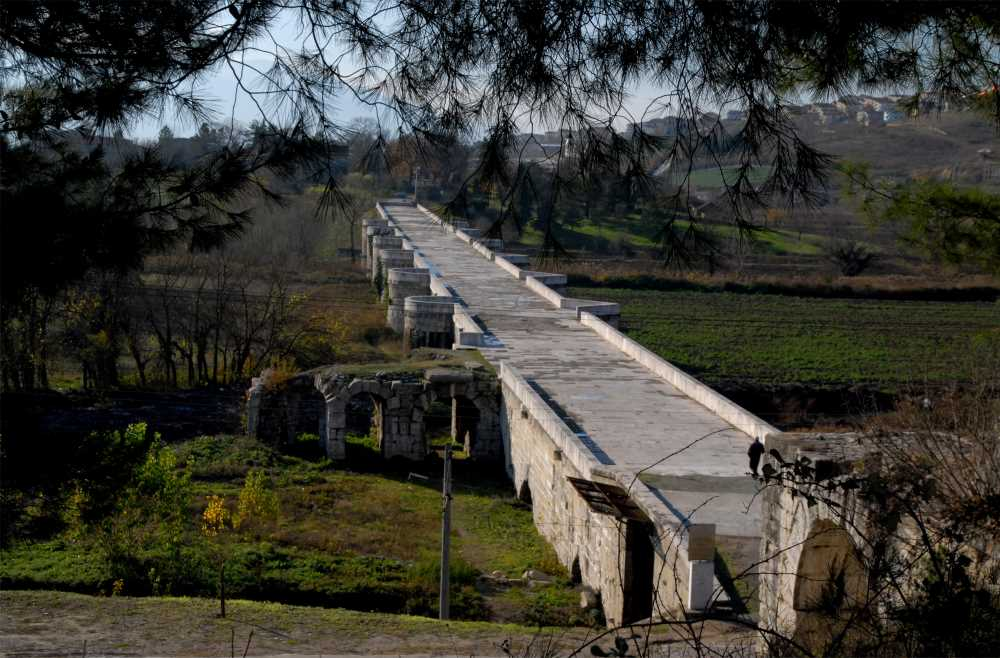
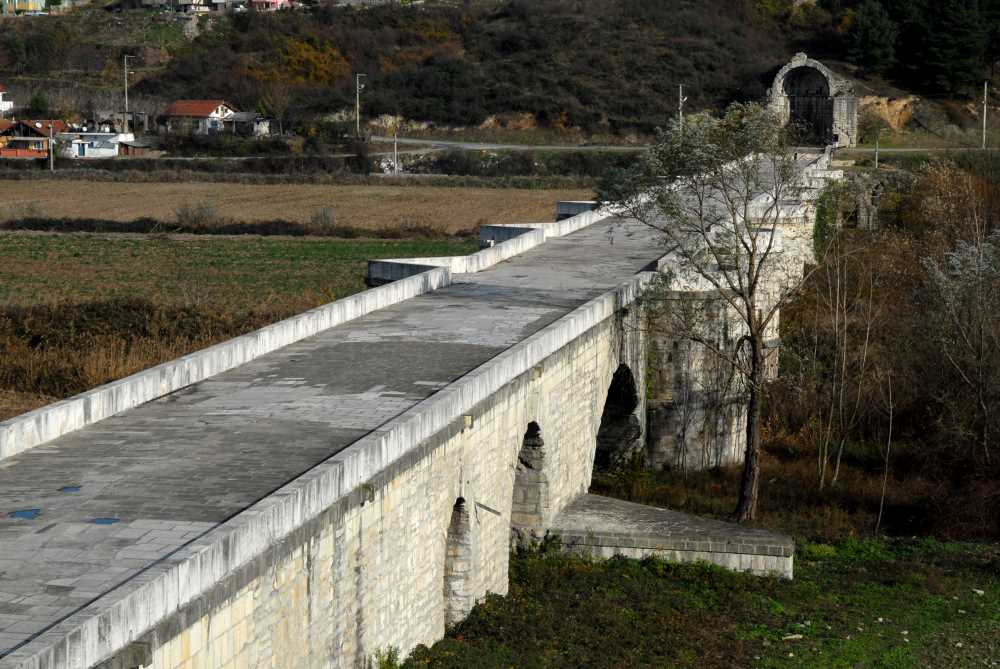

Şehrimizin Mirası
Tarihe Meydan Okuyan Yapı: Justinianus Köprüsü (Beşköprü)



Tarihçe ve Önemi
Sakarya'nın Serdivan ilçesinde yer alan Justinianus Köprüsü, Erken Bizans döneminin Anadolu'daki en görkemli anıtsal yapılarından biridir. Bizans İmparatoru Justinianus (527-565) tarafından yaptırılmıştır.
"Tarihi İpek Yolu'nun en önemli geçiş noktalarından biri olan bu köprü, günümüzde UNESCO Dünya Mirası Geçici Listesi'nde yer almaktadır."
Mimari Özellikleri
- Tamamen kesme taştan inşa edilmiştir.
- Yaklaşık 384 metre uzunluğundadır.
- 12 kemerli devasa bir yapıya sahiptir.
- Batı ucunda tak, doğu ucunda apsisli bir yapı ve tonozlar bulunur.
Hızlı Bilgiler Tablosu
| Özellik | Detay |
|---|---|
| İnşa Edilen Dönem | M.S. 558 - 560 |
| Yaptıran | İmparator I. Justinianus |
| Konum | Serdivan, Sakarya |
| Malzeme | Kireç taşı ve kesme taş |